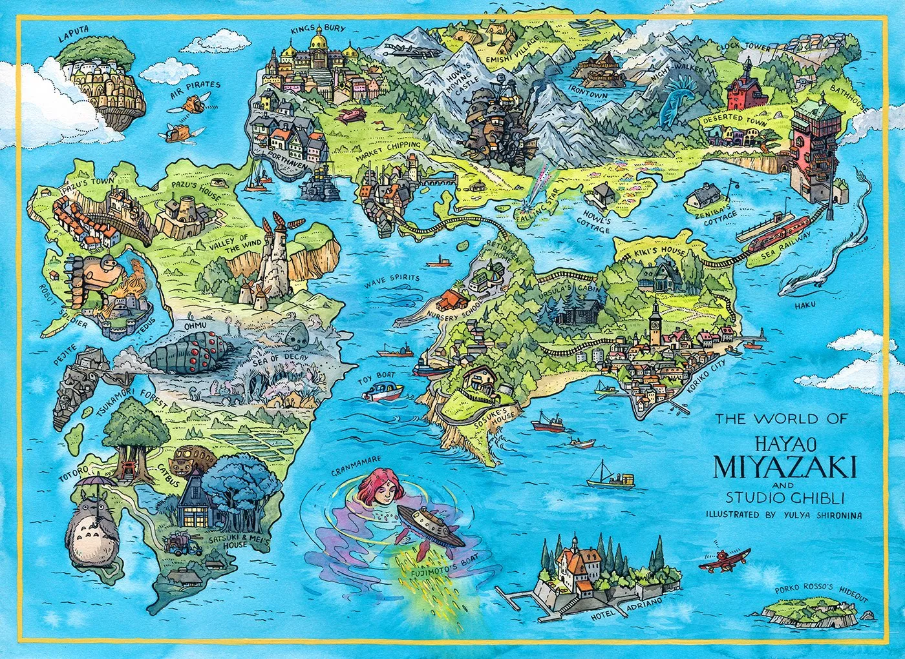
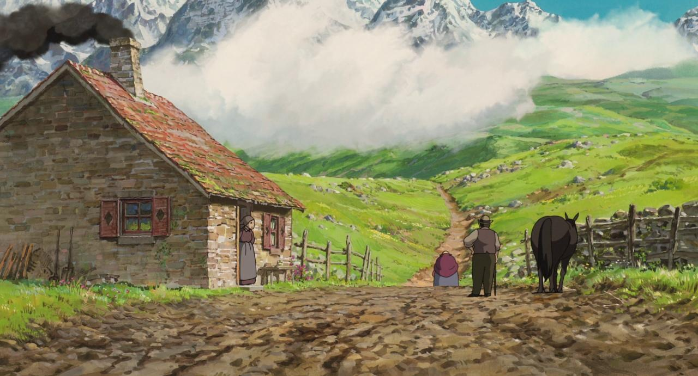

Rédigé par Marina Meloni • 2 min 30 de lecture
Dans le monde enchanteur du "Château Ambulant" de Hayao Miyazaki, l'art de la cartographie prend une toute nouvelle dimension. Le film tisse une toile de paysages complexes et de lieux magiques que Howl, l'énigmatique sorcier, traverse avec ses capacités étonnantes. Pour plonger plus profondément dans ce chef-d'œuvre cartographique, on peut se tourner vers le livre français "Hayao Miyazaki : Cartographie d'un univers", qui offre des aperçus profonds de la complexité du monde du film.
Le cœur de l'histoire, le château ambulant lui-même, est un symbole de paysages en perpétuelle évolution et de la nature dynamique du cadre du film. Cette forteresse mobile fantastique se promène à travers des prairies luxuriantes, des marchés animés et même les vues surréalistes du Désert, reflétant le lien profond entre la magie et la géographie du monde.
L'un des endroits les plus remarquables de l'univers du "Château Ambulant" est le Marécage, où Howl se rend occasionnellement pour échapper à l'agitation du monde extérieur. Dans ce marécage éloigné et surnaturel, les émotions changeantes de Howl se manifestent sous la forme de créatures bizarres et éthérées. Le Marécage est un témoignage de la maîtrise de la cartographie du film, où la géographie reflète le paysage intérieur de ses personnages.
Cartographie du monde de Miyazaki par Yulya Shironina.
La ville de Porte-Aubert, avec ses rues animées et son atmosphère vibrante, sert de contraste frappant avec la désolation du Désert. Cet endroit met en valeur l'aptitude du film à construire un monde, avec une représentation cartographique détaillée d'un centre urbain animé.
Le Désert, un endroit sinistre et menaçant, illustre davantage la cartographie complexe du film. La réticence de Howl à s'impliquer dans la guerre reflète la sombreté de cette région, soulignant la corrélation entre la géographie et les choix des personnages. La représentation du Désert dans le film offre une image visuelle des conséquences du conflit.
Le livre français "Hayao Miyazaki : Cartographie d'un univers" offre des aperçus précieux des techniques de construction du monde de Miyazaki. Il met en lumière les relations complexes entre les lieux et les personnages, attirant l'attention sur la manière dont le paysage affecte leurs choix et leur évolution tout au long de l'histoire. Le livre enrichit non seulement notre compréhension du film, mais approfondit également notre appréciation de l'art de la cartographie cinématographique.
Photo tirée du film, paysage.
En conclusion, "Le Château Ambulant" est un témoignage de la cartographie complexe d'un monde magique, magnifiquement mis en vie par Hayao Miyazaki. Ce mélange unique de magie et de géographie offre aux spectateurs une expérience captivante et immersive. Les lieux de l'univers du film, que ce soit le Marécage, Porte-Aubert ou le Désert désolé, font partie intégrante de la narration, mettant en lumière la relation entre les voyages des personnages et le monde qu'ils habitent. Avec l'aide de "Hayao Miyazaki : Cartographie d'un univers", les fans peuvent explorer davantage la profondeur et la complexité de ce monde captivant et apprécier l'art de la cartographie cinématographique dans toute sa splendeur.
prochain article